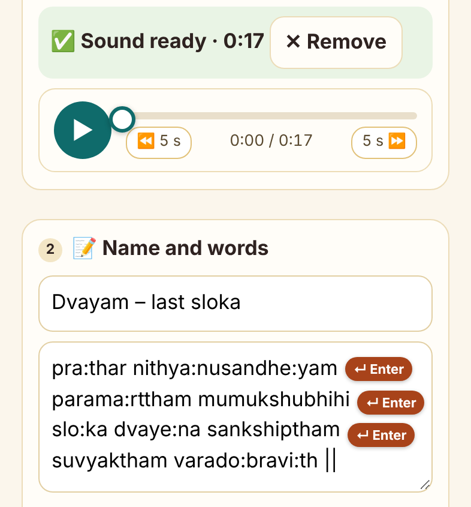
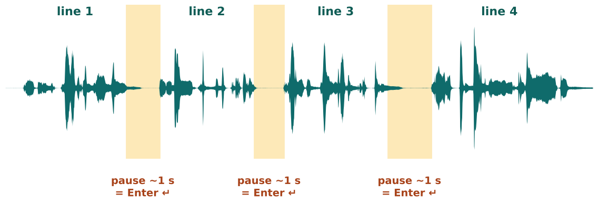
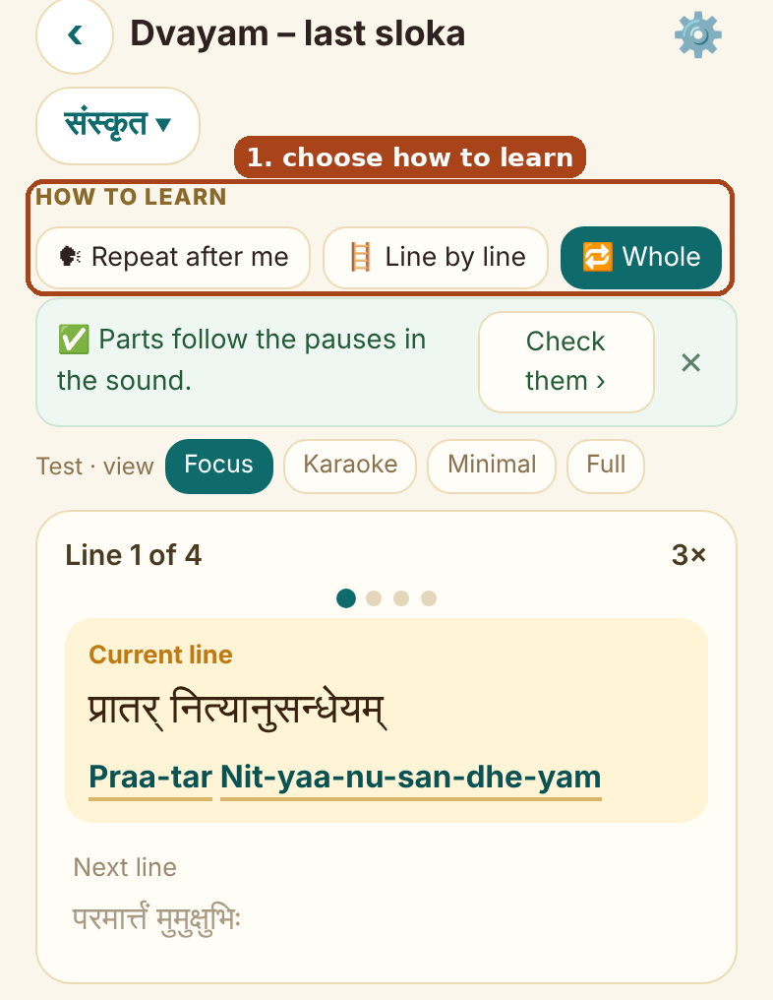
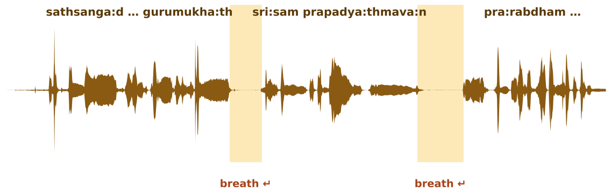
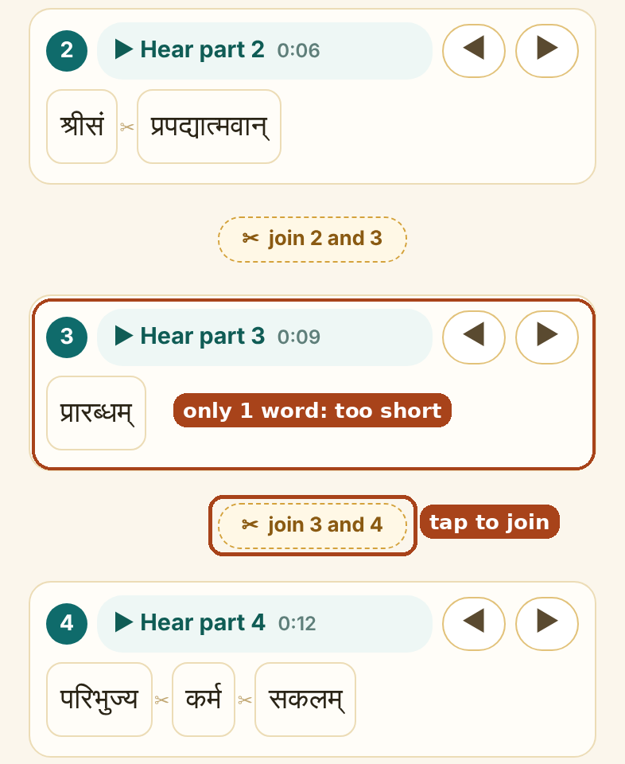

🎵 My slokas: record, add, practise
Sahasranama Guru · for any sloka or song you want to learn
The one thing to know: the app cuts the sound where the chanter pauses, and matches each pause to a line of your words. Clear pauses + one line per pause = it works straight away, with nothing to fix.
A · The simple way: record it yourself best · no fixing
1Write the words, one line per breath
Keep lines short: about half a line of the sloka, what you can chant in one breath.

In the app (step 3): type line 1, press Enter ↵, type line 2, press Enter ↵ … No Enter after the last line.
Each line = one breath = one pause in your recording. 4 lines here, so the recording needs 3 pauses.
Commas and | marks can stay; only Enter makes a new line.
2Record it in one go, with a pause after every line
- Quiet room. Phone 20–30 cm away.
- Chant line 1 → stay silent for 1 second (count "one") → chant line 2 → …
- Take your breath in the silence, not at the start of the next line.
- Leave 2–3 seconds of silence between two ślokas.
- Don't stop the recording between lines. One recording for the whole sloka.
What it sounds likepra:thar nithya:nusandhe:yam … 1 s … parama:rttham mumukshubhihi … 1 s …
slo:ka dvaye:na sankshiptham … 1 s … suvyaktham varado:bravi:th ||

A good recording: each line is a block of sound, with a clear 1-second gap (yellow) after it. Every gap matches an Enter in your words.
3Add it to the app
- Open 🎵 My slokas → ＋ Add a sloka.
- Record, or choose your audio file. Check it with ▶ (you can drag the bar).
- Paste or type the words, the same lines as step 1.
- Tap Save. The app finds the pauses and opens the player.
EXAMPLEName: Dvayam – last sloka · Sound: my-recording.m4a (17 s) · Words: the 4 lines from step 1 → Save
The player opens with 4 parts: Line 1 of 4 … Line 4 of 4, and the words light up as you play.
4PractiseChoose
How to learn on the player (see C) and tap
▶.
EXAMPLEDay 1: 🗣 Repeat after me once. Day 2 onwards: 🪜 Line by line with ⚙️ → 3 times. When you can say it: 🔁 Whole.
C · How to learn (on the player) same for A and B
🗣 Repeat after meThe guru's way: hear a part, then your turn to say it.
🪜 Line by lineEach small piece, then the whole line, then the next line.
🔁 WholeThe whole sloka from start to end.

The player after Save:
• How to learn row: tap one (box).
• "Parts follow the pauses" → Check them › only if something sounds off (B, step 4).
• Line 1 of 4: the line playing now, with the next line below.
• ⚙️ (top right): how many times (1, 3, 5 …) and speed.
• Tap any line to jump to it.
EXAMPLE · 🗣 REPEAT AFTER MEGuru: pra:thar nithya:nusandhe:yam→You say it→Guru: parama:rttham mumukshubhihi→You say it→ … → whole sloka
EXAMPLE · 🪜 LINE BY LINE, 3 TIMESA long line with a small pause inside is played in pieces first:
sathsanga:d bhava×3→nisspruho: gurumukha:th×3→whole line 1×3→line 2 …
The card shows where you are:
Line 1 of 4 · piece 2 of 2 · 2nd of 3. A short line with no pause inside is simply played 3 times.
EXAMPLE · 🔁 WHOLE, 3 TIMESlines 1 → 4short breaklines 1 → 4short breaklines 1 → 4
B · A recording made by someone else teacher, class, audio file
You can't add pauses to it, so make your words follow the chanter's breaths.
1Listen once and mark the breaths
Play it with the text in front of you. Put a mark ( / ) wherever the chanter stops to breathe. This is often
not at the commas in the book.
EXAMPLEIn the book: sathsanga:d bhava nisspruho: gurumukha:th, sri:sam prapadya:thmava:n,
What you hear: "sathsanga:d bhava nisspruho: gurumukha:th" (breath) "sri:sam prapadya:thmava:n" (breath)
Your marks: sathsanga:d bhava nisspruho: gurumukha:th / sri:sam prapadya:thmava:n /

The same idea in someone else's recording: the chanter breathes after "gurumukha:th" and after "prapadya:thmava:n", in the middle of the book's line. Each breath = an Enter in your words.
2Type the words with a new line at every mark
Example: each line from the book, split where the chanter breathessathsanga:d bhava nisspruho: gurumukha:th
sri:sam prapadya:thmava:n
pra:rabdham paribhujya karma sakalam
prakshi:na karma:ntharaha
3Add and SaveSame as A, step 3.
4Check the parts once (about 5 minutes; saved for good)
- On the player tap Check them ›.
- ▶ Hear part 1, 2, 3 … Tap a single word to hear just that word.
- A part starts one word early or late? Tap ✂ between two words to start a new part there. ✂ join puts two parts together.
- Words right, but the sound starts a little off? ◀ ▶ moves the part to the pause before or after.
- Tap Save. Done.

Real example (this Dvayam): the app made part 3 just one word, "pra:rabdham", because the chanter paused briefly after it.
Tap ▶ Hear part 3 and ▶ Hear part 4: they belong together.
Fix: tap ✂ join 3 and 4 (box). Part 3 becomes "pra:rabdham paribhujya karma sakalam".
Then ✓ Save at the bottom.
EXAMPLE · WORDS RIGHT, SOUND A LITTLE EARLYPart 5 starts with the right word but you hear the end of part 4 first → tap ▶ on part 5 once (moves it to the next pause) → it plays again so you can check.
If something is not right
| The next line slips in at the end of a part | Update the app when the New version bar shows. Play a few lines: the app learns how late your phone stops (⚙️ shows "Phone stop delay"). If it still slips in, the pause in the recording is very short: add a line break at a longer pause, or record it again with 1-second pauses. |
| Words light up one word early or late | Check them › → ✂ or ✂ join (B, step 4). |
| Sound stops after the first repeat | Update the app (New version bar). |
| Recorded without pauses by mistake | Example: you chanted all 4 lines in one breath → the app finds only 1 part. Record again with 1 s after each line (A, step 2), then ⚙️ → Edit sloka → change the sound. Your words stay. |
| Too many tiny parts / too few | Check them › → － Fewer or ＋ More. |
| No words, just the sound | That's fine: it still plays and repeats part by part. Words can be added later (⚙️ → Edit sloka). |
In short: 1-second pause after each line when you record · one line of words per pause · Save · practise. For someone else's recording: break your lines where they breathe, then check once.